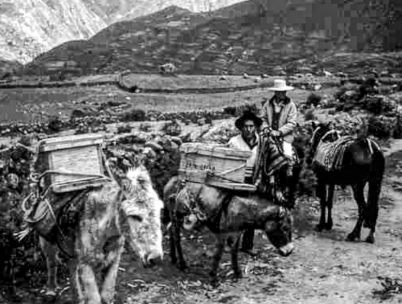
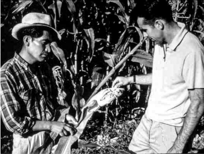
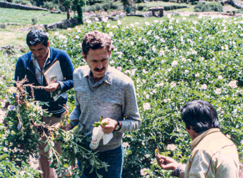
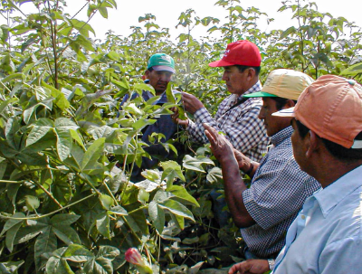
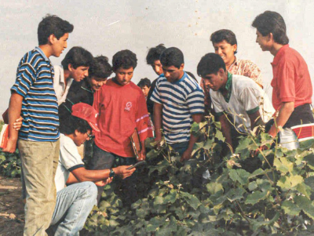
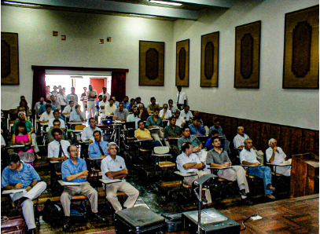
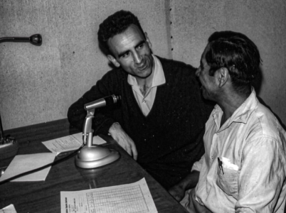
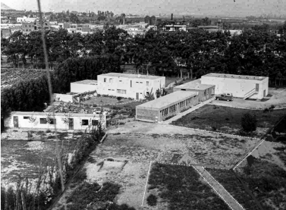
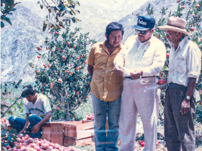

Historia
El Instituto Tecnológico Valle Grande tiene su génesis en la primera iniciativa de desarrollo rural que implemento su entidad
promotora PROSIP en el año 1965, la cual tuvo como nombre “Escuelas Radiofónicas Populares Americanas (ERPA)”. Esta iniciativa
brindaba capacitación en alfabetización, técnicas agrícolas y pecuarias, cuidados de salud e higiene personal, entre otras temáticas;
a los pobladores de las distintas comunidades del ande de las provincias de Yauyos y Huarochirí. Toda esta labor de promoción social
y humana se hacía en estrecha colaboración con la Prelatura de Yauyos, la cual se creó el 12 de abril de 1957 y fue encomendada a pedido
del Papa Pio XII a sacerdotes del Opus Dei, siendo su primer Prelado Monseñor Ignacio María de Orbegozo y Goicochea, el cual tomó posesión
el 2 de octubre de 1957.
La capacitación a distancia llevada a cabo a través de los programas de radio en colaboración con los profesores
de colegio que atendíanlos poblados en el ande, resulto ser una buena alternativa para llegar a mucha gente, sin embargo, no era tan eficaz
como el contacto personal en donde aumentaban las posibilidades de aprender más y mejor y sobre todo lograr cambios de actitud en las personas que se
beneficiaban de los programas de capacitación.

Evolución a Instituto Rural
Buscando obtener mejores resultados en la labor educativa, se creó en 1966 el “Instituto Rural de Formación Acelerada (IRFA)” donde se podía
aplicar, sin restricción alguna, los métodos apropiados de la Extensión Agrícola, como son: la Reunión de Demostración de Métodos -para
ostrar el modo de hacer una cosa-, los Cursos de Capacitación de tres días, la Demostración de Resultados, convicción definitiva de una
determinada técnica o práctica. Este cambio de modelo fue factible gracias a la construcción de la primera residencia de alumnos.
Este nuevo modelo de operar facilito la transmisión de una enseñanza con gran sentido práctico y profesional acorde con las necesidades del
pequeño agricultor. La precisión, el estudio y el trabajo se convirtieron en fuente de inspiración, que -con el tiempo- rendiría frutos y
onstituiría la base del “Instituto Rural Valle Grande”, nombre que adquirió el IRFA en 1972. Desde entonces Valle Grande es una obra co
rporativa del Opus Dei.
Valle Grande acompaño todos los grandes cambios que se produjeron en el sector agrícola del país, desde el inicio de la reforma agraria, la
constitución de las cooperativas, la desintegración de las mismas para dar paso a la parcelación de las tierras, la aparición de la pequeñ
a agricultura, la quiebra de este sector junto al Banco Agrario, el retorno de las inversiones al campo, el inicio de la agroexportación y
actualmente el Perú convertido como potencia mundial en el comercio de frutas y hortalizas. Para cada época, Valle Grande fue activando u
na serie de programas con el fin de ayudar a las familias del campo entre ellos tenemos: los ciclos zonales de capacitación, la implement
ación del servicio de análisis de suelos, el servicio cooperativo de asistencia técnica, el programa de asistencia técnica ligado al créd
ito (lo que hoy se conoce como cadenas productivas), el programa de apoyo a la asistencia técnica (dirigido a jóvenes recién egresados de
los institutos tecnológicos públicos), los programas integrales de producción para comercio local y de exportación, el servicio de maqui
naria agrícola, un sistema de información geográfica, el servicio de micropropagación de tejidos, laboratorio de control biológico, prog
rama de buenas prácticas agrícolas, cursos intensivos de capacitación, entre otros. En la sierra Valle Grande implemento otro tanto de s
ervicios como: programa de producción de semillas, programa de formación de técnicos comunales, programa de cultivos andinos, programa de
plantas medicinales, programa de ganadería, programa de cuidado del medio ambiente, programa de forestación, entre otros.
Evolución de una Educación que Transforma el Campo y la Ciudad
Después de varias décadas de trabajo ininterrumpido por parte del instituto rural, se vio conveniente realizar una apuesta mayor por la gente
joven, es así como en 1992 nace el “Instituto de Educación Superior Tecnológico Privado Valle Grande” como una respuesta a la poca oferta de
calidad y pertinente que tenían los jóvenes al egresar de la educación secundaria, además de la resistencia a aplicar mejores prácticas de
trabajo por parte de la gente mayor que participaba de los cursos de capacitación técnica. Desde un inicio se comienza la labor formativa
utilizando la “Metodología de la Alternancia”, método que ya se había probado en “Las Escuelas Familiares Agrarias”, en Francia. Este méto
do alterna espacios de formación entre el medio socio-productivo y el centro de formación, teniendo como partida de la generación del cono
cimiento la experiencia empírica que tiene el estudiante en el medio socio-productivo.



Evolución de una Educación que Transforma el Campo y la Ciudad
Después de poner en práctica esta metodología por más de 30 años, en la Carrera Profesional Técnica de Producción Agraria, confirmamos su validez a
través de los más de 800 egresados que formados bajo esta metodología vienen siendo actores importantes en el desarrollo del sector de la
agroexportación del Perú.
Esta experiencia de formación técnica exitosa mereció, en el año 2015, el reconocimiento del Fondo Nacional de Desarrollo de la Educación Peruana
(FONDEP), quien sistematizo la experiencia y la publico bajo el nombre de: “La propuesta de Alternancia, el crisol de un aprendizaje integral”.
En el año 2016, como consecuencia de la necesidad apremiante que tenían las empresas para llevar adelante sus procesos de transformación digital,
el Instituto Valle Grande pone en marcha su segunda carrera técnica, Análisis de Sistemas, esta también llevada bajo la metodología de la Alternancia.
Actualmente los egresados de esta especialidad vienen desempeñándose profesionalmente de forma exitosa en los sectores de la banca, retail, logística,
seguros entre otros.
Toda la experiencia acumulada en más de 3 décadas de funcionamiento del IES Valle Grande viene siendo compartida con otros institutos tecnológicos y empresas
del sector de la agroexportación, a través de pasantías, cursos de capacitación en alternancia, cursos intensivos de capacitación, programas de capacitación
técnica especializada (como por ejemplo los que se vienen llevando a cabo desde el 2020 con el PMESUT entidad del MINEDU) entre otras actividades.
La última iniciativa impulsada por el IES Valle Grande es la puesta en marcha de un Programa de Transitabilidad, en el marco de la Resolución Viceministerial
Nro. 176-2021-MINEDU publicada el pasado 08 de junio de 2021. Esta iniciativa que responde a la necesidad que tienen los colegios de educación básica,
en concreto sus docentes y sus alumnos de adquirir competencias digitales en su e tapa escolar. Al cierre del 2022 se tuvo la segunda edición,
beneficiándose tres grandes unidades escolares de la UGEL de Cañete.





